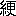
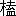

惟ふに、
描ける
美人は、
活ける
醜女よりも
可也。
傳へ
聞く、
漢の
武帝の
宮人麗娟、
年はじめて十四。
玉の
膚艷やかにして
皓く、
且つ
澤ふ。たきもしめざる
蘭麝おのづから
薫りて、
其の
行くや
 蝶相飛
蝶相飛べり。
蒲柳纖弱、
羅綺にだも
勝へ
難し。
麗娟常に
身の
何處にも
瓔珞を
挂くるを
好まず。これ
袂を
拂ふに
當りて、
其の
柔かなる
膚に
珠の
觸れて、
痕を
留めむことを
恐れてなり。
知るべし、
今の
世に
徒に
指環の
多きを
欲すると、
聊か
其の
抱負を
異にするものあることを。
麗娟宮中に
歌ふ
時は、
當代の
才人李延年ありて
是に
和す。かの
長生殿裡日月のおそき
處、ともに
 風
風の
曲を
唱するに
當りてや、
庭前颯と
風興り、
花ひら／＼と
飜ること、
恰も
霏々として
雪の
散るが
如くなりしとぞ。
此の
姫また
毎に
琥珀を
以て
佩として、
襲衣の
裡に
人知れず
包みて
緊む。
立居其の
度になよやかなる
玉の
骨、
一つ／＼
琴の
絲の
如く
微妙の
響を
作して、
聞くものの
血を
刺し、
肉を
碎かしめき。
女子粧はば
寧ろ
恁の
如きを
以て
會心の
事とせん。
美顏術に
到りては
抑々末也。
同じ
時、
賈雍將軍は
蒼梧の
人、
豫章の
太守として
國の
境を
出で、
夷賊の
寇するを
討じて
戰に
勝たず。
遂に
蠻軍のために
殺され
頭を
奪はる。
見よ、
頭なき
其の
骸、
金鎧一縮して
戟を
横へ、
片手を
擧げつゝ
馬に
跨り、
砂煙を
拂つてトツ／＼と
陣に
還る。
陣中豈驚かざらんや。
頭あるもの
腰を
拔かして、ぺた／＼と
成つて
 目
目して
之を
見れば、
頭なき
將軍の
胴、
屹然として
馬上にあり。
胸の
中より
聲を
放つて、
叫んで
曰く、
無念なり、
戰利あらず、
敵のために
傷はれぬ。やあ、
方々、
吾が
頭あると
頭なきと
何れが
佳きや。
時に
賈雍が
從卒、おい／＼と
泣いて
告して
曰く、
頭あるこそ
佳く
候へ。
言ふに
從うて、
將軍の
屍血を
噴いて
馬より
墜つ。
勇將も
傑僧も
亦同じ。むかし
行簡禪師は
天台智大師の
徒弟たり。
或時、
群盜に
遇うて
首を
斬らる。
禪師、
斬られたる
其の
首を
我手に
張子の
面の
如く
捧げて、チヨンと、わけもなしに
項のよき
處に
乘せて、
大手を
擴げ、
逃ぐる
數十の
賊を
追うて
健なること
鷲の
如し。
尋で
瘡癒えて
死せずと
云ふ。
壯なる
哉、
人々。
むかし
宋の
武帝の
女、
壽陽麗姫、
庭園を
歩する
時梅の
花散りて
一片其の
顏に
懸る。
其の
俤また
較ふべきものなかりしより、
當時の
宮女皆爭つて
輕粉を
以て
顏に
白梅の
花を
描く、
稱して
梅花粧と
云ふ。
隋の
文帝の
宮中には、
桃花の
粧あり。
其の
趣相似たるもの
也。
皆色を
衒ひ
寵を
售りて、
君が
意を
傾けんとする
所以、
敢て
歎美すべきにあらずと
雖も、
然れども
其の
志や
可憐也。
司馬相如が
妻、
卓文君は、
眉を
畫きて
翠なること
恰も
遠山の
霞める
如し、
名づけて
遠山の
眉と
云ふ。
魏の
武帝の
宮人は
眉を
調ふるに
青黛を
以つてす、いづれも
粧ふに
不可とせず。
然るに
南方の
文帝、
元嘉の
年中、
京洛の
婦女子、
皆悉く
愁眉、
泣粧、
墮馬髻、
折要歩、
齲齒笑をなし、
貴賤、
尊卑、
互に
其の
及ばざるを
恥とせり。
愁眉は
即ち
眉を
作ること
町内の
若旦那の
如く、
細く
剃りつけて、
曲り
且つ
竦むを
云ふ。
泣粧は
目の
下にのみ
薄く
白粉を
塗り
一刷して、ぐいと
拭ひ
置く。
其の
状涙にうるむが
如し。
墮馬髻のものたるや、がつくり
島田と
云ふに
同じ。
案ずるに、
潰と
云ひ、
藝子と
云ひ
投と
云ひ、
奴はた
文金、
我が
島田髷のがつくりと
成るは、
非常の
時のみ。
然るを、
元嘉、
京洛の
貴婦人、
才媛は、
平時に
件の
墮馬髻を
結ふ。たとへば
髷を
片潰して
靡け
作りて
馬より
墮ちて
髻の
横状に
崩れたる
也。
折要歩は、
密と
拔足するが
如く、
歩行に
故と
惱むを
云ふ、
雜と
癪持の
姿なり。
齲齒笑は
思はせぶりにて、
微笑む
時毎に
齲齒の
痛みに
弱々と
打顰む
色を
交へたるを
云ふ。これなん
當時の
國色、
大將軍梁冀が
妻、
孫壽夫人一流の
媚態より
出でて、
天下に
洽く、
狹土邊鄙に
及びたる
也。
未だ
幾ほどもあらざりき、
天下大に
亂れて、
敵軍京師に
殺倒し、
先づ
婦女子を
捕へて
縱に
凌辱を
加ふ。
其の
時恥辱と
恐怖とに
弱きものの
聲をも
得立てず、
傷み、
悲み、
泣ける
容、
粧はざるに
愁眉、
泣粧。
柳腰鞭に
折けては
折要歩を
苦しみ、
金釵地に
委しては
墮馬髻を
顯實す。
聊も
其の
平常の
化粧と
違ふことなかりしとぞ。
今の
世の
庇髮、あの
夥しく
顏に
亂れたる
鬢のほつれは
如何、
果してこれ
何の
兆をなすものぞ。
隋の
沈光字は
總持、
煬帝に
事へて
天下第一驍捷の
達人たり。
帝はじめ
禪定寺を
建立する
時、
幡を
立つるに
竿の
高さ
十餘丈。
然るに
大風忽ち
起りて
幡の
曳綱頂より
斷れて
落ちぬ。これを
繋がんとするに
其の
大なる
旗竿を
倒さずしては
如何ともなし
難し。これを
倒さんは
不祥なりとて、
仰いで
評議區々なり。
沈光これを
見て
笑つて
曰く、
仔細なしと。
太綱の
一端を
前齒に
銜へてする／＼と
竿を
上りて
直に
龍頭に
至る。
蒼空に
人の
點あり、
飄々として
風に
吹かる。これ
尚ほ
奇とするに
足らず。
其の
綱を
透し
果つるや、
筋斗を
打ち、
飜然と
飛んで、
土に
掌をつくと
齊しく、
眞倒にひよい／＼と
行くこと
十餘歩にして、けろりと
留まる。
觀るもの
驚歎せざるはなし。
寺僧と
時人と、ともに、
沈光を
呼んで、
肉飛仙と
云ふ。
後に
煬帝遼東を
攻むる
時、
梯子を
造りて
敵の
城中を
瞰下す。
高さ
正に
十五丈。
沈光其の
尖端に
攀ぢて
賊と
戰うて
十數人を
斬る。
城兵這奴憎きものの
振舞かなとて、
競懸りて
半ばより、
梯子を
折く。
沈光頂よりひつくりかへりざまに
梯子を
控へたる
綱を
握り、
中空より
一たび
跳返りて
劍を
揮ふと
云へり。それ
飛燕は
細身にしてよく
掌中に
舞ふ、
絶代の
佳人たり。
沈光は
男兒のために
氣を
吐くものか。
洛陽伽藍記に
云ふ。
魏の
帝業を
承くるや、
四海こゝに
靜謐にして、
王侯、
公主、
外戚、
其の
富既に
山河を
竭して
互に
華奢驕榮を
爭ひ、
園を
脩め
宅を
造る。
豐室、
洞門、
連房、
飛閣。
金銀珠玉巧を
極め、
喬木高樓は
家々に
築き、
花林曲池は
戸々に
穿つ。さるほどに
桃李夏緑にして
竹柏冬青く、
霧芳しく
風薫る。
就中、
河間王深の
居邸、
結構華麗、
其の
首たるものにして、
然も
高陽王と
華を
競ひ、
文柏堂を
造營す、
莊なること
帝居徽音殿と
相齊し、
清水の
井に
玉轆轤を
置き、
黄金の
瓶を
釣るに、
練絹の
五色の
絲を
とす。
曰く、
晉の
石崇を
見ずや、
渠は
庶子にして
尚ほ
狐腋雉頭の
裘あり。
況や
我は
太魏の
王家と。
又迎風館を
起す。
室に、
玉鳳は
鈴を
啣み、
金龍は
香を
吐けり。
窓に
挂くるもの
列錢の
青瑣なり。
素
、
朱李、
枝撓にして
簷に
入り、
妓妾白碧、
花を
飾つて
樓上に
坐す。
其の
宗室を
會して、
長夜の
宴を
張るに
當りては、
金瓶、
銀百餘を
陳ね、
瑪瑙の
酒盞、
水晶の
鉢、
瑠璃の
椀、
琥珀の
皿、いづれも
工の
奇なる
中國未だ
嘗てこれあらず、
皆西域より
齎す
處。
府庫の
内には
蜀江の
錦、
呉均の
綾、
氷羅、
 氈
氈、
雪穀、
越絹擧て
計ふべからず。
王、こゝに
於て
傲語して
曰く、
我恨らくは
石崇を
見ざることを、
石崇も
亦然らんと。
晉の
石崇は
字を
季倫と
云ふ。
季倫の
父石苞、
位已に
司徒にして、
其の
死せんとする
時、
遺産を
頒ちて
諸子に
與ふ。たゞ
石崇には
一物をのこさずして
云ふ。
此の
兒、
最少なしと
雖も、
後に
自から
設得んと。
果せる
哉、
長なりて
荊州の
刺史となるや、
潛に
海船を
操り、
海を
行く
商賈の
財寶を
追剥して、
富を
致すこと
算なし。
後に
衞尉に
拜す。
室宇宏麗、
後房數百人の
舞妓、
皆綺
を
飾り、
金翠を
珥む。
嘗て
河陽の
金谷に
別莊を
營むや、
花果、
草樹、
異類の
禽獸一としてあらざるものなし。
時に
武帝の
舅に
王鎧と
云へるものあり。
驕奢を
石崇と
相競ふ。
鎧飴を
以て
釜を
塗れば、
崇は
蝋を
以て
薪とす。
鎧、
紫の
紗を
伸べて
四十里の
歩障を
造れば、
崇は
錦に
代へて
是を
五十里に
張る。
武帝其の
舅に
力を
添へて、まけるなとて、
珊瑚樹の
高さ
二尺なるを
賜ふ。
王鎧どんなものだと
云つて、
是を
石崇に
示すや、
石崇一笑して
鐵如意を
以て
撃つて
碎く。
王鎧大に
怒る。
石崇曰く、
恨むることなかれと
即ち
侍僮に
命じて、おなじほどの
珊瑚六七株を
出して
償ひ
遷しき。
然れども
後遂に
其の
妓、
緑珠が
事によりて、
中書令孫秀がために
害せらる。
河間王が
宮殿も、
河陰の
亂逆に
遇うて
寺院となりぬ。
唯、
堂觀廊廡、
壯麗なるが
故に、
蓬莱の
仙室として
呼ばれたるのみ。
歎ずべきかな。
朱荷曲池のあと、
緑萍蒼苔深く
封して、
寒蛩喞々たり、
螢流二三點。
唐の
開元年中、
呉楚齊魯の
間、
劫賊あり。
近頃は
不景氣だ、と
徒黨十餘輩を
語らうて
盛唐縣の
塚原に
至り、
數十の
塚を
發きて
金銀寶玉を
掠取る。
塚の
中に、
時の
人の
白茅冢と
呼ぶものあり。
賊等競うてこれを
發く。
方一丈ばかり
掘るに、
地中深き
處四個の
房閣ありけり。
唯見る
東の
房には、
弓 槍戟
槍戟を
持ちたる
人形あり。
南の
房には、
綵錦綺堆し。
牌ありて
曰く
周夷王所賜錦三百端と。
下に
又棚ありて
金銀珠玉を
裝れり。
西の
房には
漆器あり。
蒔繪新なるものの
如し。さて
其北の
房にこそ、
珠以て
飾りたる
棺ありけれ。
内に
一人の
玉女あり。
生けるが
如し。
緑の
髮、
桂の
眉、
皓齒恰も
河貝を
含んで、
優美端正畫と
雖も
及ぶべからず。
紫の

、
繍ある
※［＃「韈」の「罘−不」に代えて「囚」、134-9］、
珠の
履をはきて
坐しぬ。
香氣一脈、
芳霞靉靆く。いやな
奴あり。
手を
以て
密と
肌に
觸るゝに、
滑かに
白く
膩づきて、
猶暖なるものに
似たり。
棺の
前に
銀樽一個。
兇賊等爭つてこれを
飮むに、
甘く
芳しきこと
人界を
絶す。
錦綵寶珠、
賊等やがて
意のまゝに
取出だしぬ。さて
見るに、
玉女が
左の
手のくすり
指に
小さき
玉の
鐶を
嵌めたり。
其の
彫の
巧なること、
世の
人の
得て
造るべきものにあらず。いざや、と
此を
拔かんとするに、
弛く
柔かに、
細く
白くして、
然も
拔くこと
能はず。
頭領陽知春制して
曰く、わい
等、
其は
止せと。
小賊肯かずして、
則ち
刀を
執つて
其の
指を
切つて
珠を
盜むや、
指より
紅の
血衝と
絲の
如く
迸りぬ。
頭領面を
背けて
曰く、
於戲痛哉。
冢を
出でんとするに、
矢あり、
蝗の
如く
飛ぶ。
南房の
人形氏、
矢繼早に
射る
處、
小賊皆倒る。
陽知春一人のみ
命を
全うすることを
得て、
取り
得たる
寶貝は
盡くこれを
冢に
返す。
官も
亦後、
渠を
許しつ。
軍士を
遣はし
冢を
修む。
其時銘誌を
尋ぬるに
得ることなく、
誰が
冢たるを
知らずと
云ふ。
晉の
少主の
時、
婦人あり。
容色艷麗、
一代の
佳。
而して
帶の
下空しく
兩の
足ともに
腿よりなし。
餘は
常人に
異なるなかりき。
其の
父、
此の
無足婦人を
膝行軌に
乘せ、
自ら
推しめぐらして
京都の
南の
方より
長安の
都に
來り、
市の
中にて、
何うぞやを
遣る。
聚り
見るもの、
日に
數千人を
下らず。
此の
婦、
聲よくして
唱ふ、
哀婉聞くに
堪へたり。こゝに
於て、はじめは
曲巷の
其處此處より、やがては
華屋、
朱門に
召されて、
其の
奧に
入らざる
處殆ど
尠く、
彼を
召すもの、
皆な
其の
不具にして
艷なるを
惜みて、
金銀衣裳を
施す。
然るに
後年、
京城の
諸士にして、かの
北狄の
囘文を
受けたるもの
少からず、
事顯はるゝに
及びて、
官司、
其の
密使を
案討するに、
無足の
婦人即ち
然り、
然も
奸黨の
張本たりき。
後遂に
誅戮せらる、
恁の
如きもの
人妖也。
明州の
人、
柳氏、
女あり。
優艷にして
閑麗なり。
其の
女、
年はじめて十六。フト
病を
患ひ、
關帝の
祠に
祷りて
日あらずして
癒ゆることを
得たり。よつて
錦繍の
幡を
造り、
更に
詣でて
願ほどきをなす。
祠に
近き
處少年の
僧あり。
豫て
聰明をもつて
聞ゆ。
含春が
姿を
見て、
愛戀の
情に
堪へず、
柳氏の
姓を
呪願して、
密に
帝祠に
奉る。
其の
句に
曰く、
江南柳嫩緑。
未成陰攀折。
尚憐枝葉小。
黄 飛上力難
飛上力難。
留取待春深。
含春も
亦明敏にして、
此の
句を
見て
略ぼ
心を
知り、
大に
當代の
淑女振を
發揮して、いけすかないとて
父に
告ぐ。
父や、
今古の
野暮的、
娘に
惚れたりとて
是を
公に
訴へたり。
時に
方國※氏［＃「さんずい＋珍のつくり」、U+6CB4、136-14］、
眞四角な
先生にて、すなはち
明州の
刺史たり。
忽ち
僧を
捕へて
詰つて
曰く、
汝何の
姓ぞ。
恐る／＼
對て
曰く、
竺阿彌と
申ますと。
方國僧をせめて
曰く、
汝職分として
人の
迷を
導くべし。
何ぞかへつて
自ら
色に
迷ふことをなして、
佗の
女子を
愛戀し、
剩へ
關帝の
髯に
紅を
塗る。
言語道斷ぢやと。
既に
竹の
籠を
作らしめ、これに
盛りて
江の
中に
沈めんとす。
而して
國※［＃「さんずい＋珍のつくり」、U+6CB4、137-4］、
一偈を
作り
汝が
流水に
歸るを
送るべしとて、
因て
吟じて
云ふ。
江南竹巧匠。
結成籠好。
與吾師藏法體。
碧波深處伴蛟龍。
方知色是空。
竺阿彌、めそ／＼と
泣きながら、
仰なれば
是非もなし。
乞ふ
吾が
最後の
一言を
容れよ、と
云ふ。
國※［＃「さんずい＋珍のつくり」、U+6CB4、137-12］何をか
云ふ、
言はむと
欲する
處疾く
申せ、とある
時、
江南月如鏡亦如鉤。
明鏡不臨紅粉面。
曲鉤不上畫簾頭。
空自照東流。
國※［＃「さんずい＋珍のつくり」、U+6CB4、138-2］大に
笑つて、
馬鹿め、おどかしたまでだと。これを
釋し、
且つ
還俗せしめて、
柳含春を
配せりと
云ふ。
唐の
開元年中の
事とぞ。
戸部郡の
令史が
妻室、
美にして
才あり。たま／＼
鬼魅の
憑る
處となりて、
疾病狂せるが
如く、
醫療手を
盡すといへども
此を
如何ともすべからず。
尤も
其の
病源を
知るものなき
也。
令史の
家に
駿馬あり。
無類の
逸物なり。
恆に
愛矜して
芻秣を
倍し、
頻に
豆を
食ましむれども、
日に
日に
痩疲れて
骨立甚だし。
擧家これを
怪みぬ。
鄰家に
道術の
士あり。
童顏白髮にして
年久しく
住む。
或時談此の
事に
及べば、
道士笑うて
曰く、それ
馬は、
日に
行くこと
百里にして
猶羸るゝを
性とす。
況や
乃、
夜行くこと
千里に
餘る。
寧ろ
死せざるを
怪むのみと。
令史驚いて
言ふやう、
我が
此の
馬はじめより
厩を
出さず
祕藏せり。
又家に
騎るべきものなし。
何ぞ
千里を
行くと
云ふや。
道人の
曰く、
君常に
官に
宿直の
夜に
當りては、
奧方必ず
斯の
馬に
乘つて
出でらるゝなり。
君更に
知りたまふまじ。もしいつはりと
思はれなば、
例の
宿直にとて
家を
出でて、
試みにかへり
來て、
密かに
伺うて
見らるべし、と
云ふ。
令史、
大に
怪み、
即ち
其の
詞の
如く、
宿直の
夜潛に
歸りて、
他所にかくれて
妻を
伺ふ。
初更に
至るや、
病める
妻なよやかに
起きて、
粉黛盛粧都雅を
極め、
女婢をして
件の
駿馬を
引出させ、
鞍を
置きて
階前より
飜然と
乘る。
女婢其の
後に
續いて、こはいかに、
掃帚に
跨り、ハツオウと
云つて
前後して
冉々として
雲に
昇り
去つて
姿を
隱す。
令史少からず
顛動して、
夜明けて
道士の
許に
到り
嗟歎して
云ふ、
寔に
魅のなす
業なり。
某將是を
奈何せむ。
道士の
曰く、
君乞ふ
潛にうかゞふこと
更に
一夕なれ。
其の
夜令史、
堂前の
幕の
中に
潛伏して
待つ。
二更に
至りて、
妻例の
如く
出でむとして、フト
婢に
問うて
曰く、
何を
以つて
此のあたりに
生たる
人の
氣あるや。これを
我が
國にては
人臭いぞと
云ふ
議なり。
婢をして
帚に
燭し
炬の
如くにして
偏く
見せしむ。
令史慌て
惑ひて、
傍にあり
合ふ
大なる
甕の
中に
匐隱れぬ。
須臾して
妻はや
馬に
乘りてゆらりと
手綱を
掻繰るに、
帚は
燃したり、
婢の
乘るべきものなし。
遂に
件の
甕に
騎りて、もこ／＼と
天上す。
令史敢て
動かず、
昇ること
漂々として
愈々高く、やがて、
高山の
頂一の
蔚然たる
林の
間に
至る。こゝに
翠帳あり。
七八人群飮むに、
各妻を
帶して
並び
坐して
睦じきこと
限なし。
更闌けて
皆分れ
散る
時、
令史が
妻も
馬に
乘る。
婢は
又其甕に
乘りけるが
心着いて
叫んで
曰く、
甕の
中に
人あり。と。
蓋を
拂へば、
昏惘として
令史あり。
妻、
微醉の
面、
妖艷無比、
令史を
見て
更に
驚かず、そんなものはお
打棄りよと。
令史を
突出し、
大勢一所に、あはゝ、おほゝ、と
更に
空中に
昇去りぬ。
令史間の
拔けた
事夥し。
呆れて
夜を
明すに、
山深うして
人を
見ず。
道を
尋ぬれば
家を
去ること
正に
八百里程。
三十日を
經て
辛うじて
歸る。
武者ぶり
着いて、これを
詰るに、
妻、
綾羅にだも
堪へざる
状して、
些とも
知らずと
云ふ。
又實に
知らざるが
如くなりけり。
唐の
玄宗、
南の
方に
狩す。
百官司職皆これに
從ふ
中に、
王積薪と
云ふもの
當時碁の
名手なり。
同じく
扈從して
行いて
蜀道に
至り、
深谿幽谷の
間にして
一軒家に
宿借る。
其の
家、
姑と
婦と
二人のみ。
積薪に
夕餉を
調へ
畢りて
夜に
入りぬ。
一間なる
處に
臥さしめ、
姑と
婦は、
二人戸を
閉ぢて
別に
籠りて
寢ねぬ。
馴れぬ
山家の
旅の
宿りに
積薪夜更けて
寢ね
難く、
起つて
簷に
出づ。
時恰も
良夜。
折から
一室處より
姑の
聲として、
婦に
云うて
曰く、
風靜に
露白く、
水青く、
月清し、
一山の
松の
聲蕭々たり。
何うだね、
一石行かうかねと。
婦の
聲にて、あゝ
好いわねえ、お
母さんと
云ふ。
積薪私に
怪む、はてな、
此家、
納戸には
宵から
燈も
點けず、わけて
二人の
女、
別々の
室に
寢た
筈を、
何事ぞと
耳を
澄ます。
婦は
先手と
見ゆ。
曰く、
東の五からはじめて
南の九の
石と、
姑言下に
應じて、
東の五と
南の十二と、やゝありて
婦の
聲。
西の八ツから
南の十へ、
姑聊も
猶豫はず、
西の九と
南の十へ。
恁くて
互に
其の
間に
考案する
隙ありき。さすがに
斯道の
達人とて、
積薪は
耳を
澄して、
密かに
其の
戰を
聞居たり。
時四更に
至りて、
姑の
曰く、お
前、おまけだね、
勝つたが
九目だけと。あゝ、
然うですね、と
婦の
聲してやみぬ。
積薪思はず
悚然として、
直ちに
衣冠を
繕ひ、
若き
婦は
憚あり、
先ず
姑の
閨にゆき、もし／＼と
聲を
掛けて、さて、
一石願ひませう、と
即ち
嗜む
處の
嚢より
局盤の
圖を
出し、
黒白の
碁子を
以て
姑と
戰ふ。はじめ
二目三目より、
本因坊膏汗を
流し、
額に
湯煙を
立てながら、
得たる
祕法を
試むるに、
僅少十餘子を
盤に
布くや、
忽ち
敗けたり。
即ち
踞いて
教を
乞ふ。
姑微笑みて、
時に
起きて
座に
跪坐たる
婦を
顧みて
曰ふ、お
前教へてお
上げと。
婦、
櫛卷にして
端坐して、
即ち
攻守奪救防殺の
法を
示す。
積薪習ひ
得て、
將た
天が
下に
冠たり。
それ、
放たれたる
女は、
蜀道の
良夜にあり。
敢て
目白の
學校にあらざる
也。
明治四十五年三月・六月